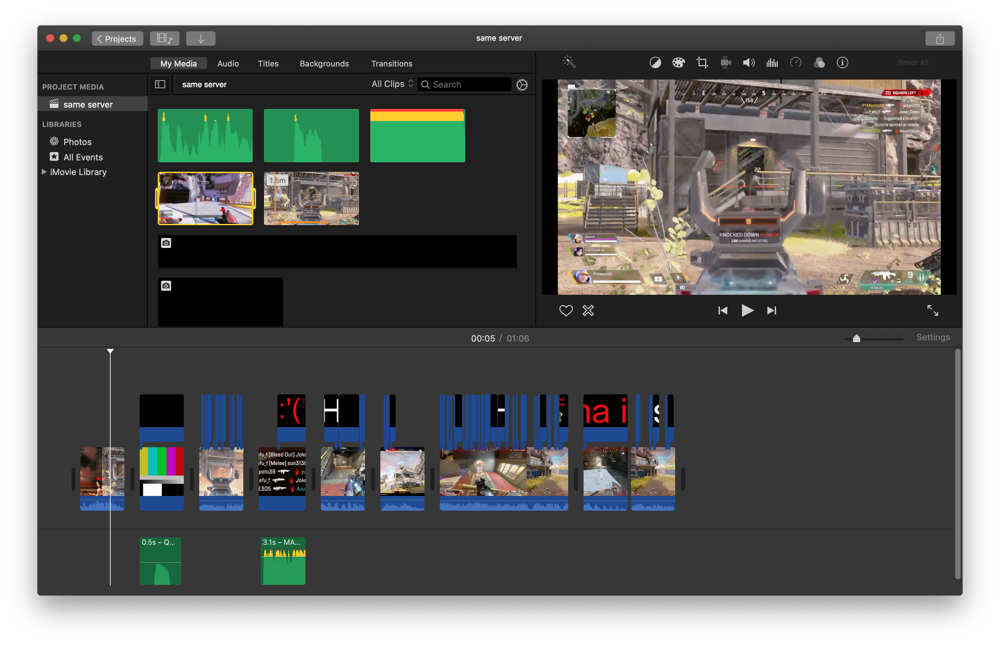

My favorite application is iMovie. A video editing tool by apple, it is very simple and easy to use. I would use it to edit my clips mostly gaming clips. However, I does lack some tools and options from other editing tools.
The reason why I use iMovie rather than any video editing (though I do tend to use the other editing tool called DaVinci Resolve only because of the tools it has that iMovie does not have) is when it comes to exporting the video it gives the best result such as the resolution.
Shown below is a screenshot of how a video edit I did a few months ago. I would put funny audios and highlight any funny comments from my friends. I had so much much fun editing this. The only challenging part was adding the words because iMovie does not have an option for me to put my text anywhere in the video, so I had to find another alternative way to do so.
After this, I grew tired of not being able to put my text, so I tried to find another video editing tool so and that's when I found DaVinci Resolve as I've said previously. It is available for windows and mac. As seen on the picture below, I could identify which text are from my words and from my friends by color coding it.

I However, when I exported a previous video I have done (the picture above is still in the works), the result of the video got a darker tone somehow the video got darker and harder to see. But I resolved that by increasing the highlight on my phone. The reason why I choose iMovie as my favorite application and not DaVinci Resolve. I could always depend on iMovie, regardless on its flaws. I can adapt to it easily thanks to my many years of experiences with it.